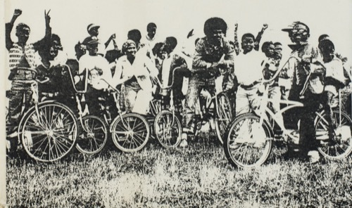
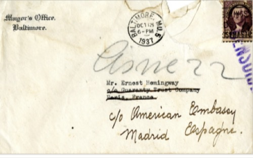
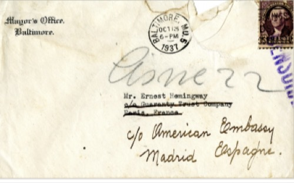
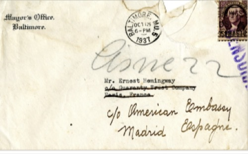
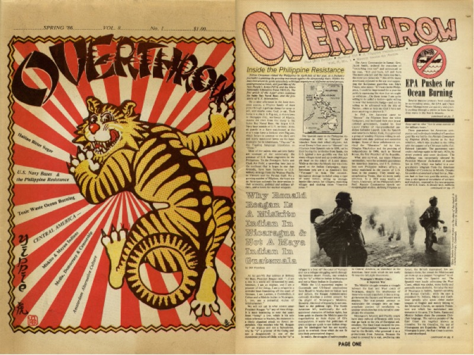

JSTOR
Advanced Search
Workspace
Browse ▾
Georgia O'Keeffe, Ghost Ranch Landscape (detail), c. 1936. Part of Georgia O'Keeffe Museum
Image 1 of 5

 


Enrich your research with primary sources
Explore millions of high-quality primary sources and images from around the world, including artworks, maps, photographs, and more.
Take an interdisciplinary approach to immigration
Explore migration issues through a variety of media types
IMAGE
Catherine Tedford, "Abolish ICE, Jes... part of The streets are Talking; Public Forms of creative expression from Around the World
Catherine Tedford, "Abolish ICE, Jes... part of The streets are Talking; Public Forms of creative expression from Around the World
ARTICLE
The Labour Market Integration of... part of The Journal of Economic Perspectives, Vol. 34, No. 1(Winter 2020)
The Labour Market Integration of... part of The Journal of Economic Perspectives, Vol. 34, No. 1(Winter 2020)
RESEARCH REPORT
A Brief History of U.S Immigration... part of Cato Institute (August, 3, 2021)
A Brief History of U.S Immigration... part of Cato Institute (August, 3, 2021)
IMAGE
Handwritten posters from the 2017... Part of Open: Smithsonian National Museum of African American History & Culture
Handwritten posters from the 2017... Part of Open: Smithsonian National Museum of African American History & Culture
Broaden your research with images and primary sources
 Bring your work to life with images
Bring your work to life with images
harness the power visual materials-explore more than 3 million images now on JSTOR

Incorporate alternative choices in your research
Enhance your scholarly research with underground newspapers, magazines, and journals
Enhance your scholarly research with underground newspapers, magazines, and journals
 Take your research further with Artstor's 3+ million images
Take your research further with Artstor's 3+ million images
Explore collections in the art sciences, and literature from the world's leading museums, archieve, and scholars.
ABOUT US
About JSTOR
Mission and
History
JSTOR Labs
JSTOR Daily
News
Webiners
Careers
EXPLORE
CONTENT
CONTENT
What's in JSTOR
Advanced Search
By Subject
By Title
Collections
Publishers
Images
RESEARCH
TOOLS
TOOLS
Data for research
Text Analyzer
The JSTOR
Understanding
Series
Constellate
HELP CENTER
GET Support
GET Access
LibGuides
Research Basics
Contact Us

JSTOR is part of ITHAKA, a not-for-profit profit organization helping the academic community use digital technologies to preserve the scholarly record and to advance teaching and research in sustainable ways.
2000-2024 ITHAKA. All Rights Reserved. JSTOR, the JSTOR logo, JPASS, Artstor's, Reveal Digital and ITHAKA are registered trademarks of ITHAKA.
2000-2024 ITHAKA. All Rights Reserved. JSTOR, the JSTOR logo, JPASS, Artstor's, Reveal Digital and ITHAKA are registered trademarks of ITHAKA.